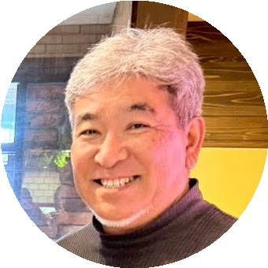

オーナー紹介
YUMI
こんにちは、YUMIです。那須高原の豊かな自然に一目惚れし、この地に「Ret.Village」を作りました。 料理と旅が大好きで、訪れる方々に"自分だけの別荘"のようにくつろいでいただけることを何より大切にしています。 焚き火を囲んで過ごすひととき、森の空気の中での朝ごはん——そんな特別な時間をぜひ楽しんでください。 ご不明な点があればいつでもお気軽にどうぞ。

MIKIO
はじめまして、MIKIOです。DIYが趣味で、施設内のデッキや内装の多くを自分の手で作り上げました。 BBQグリル・ビールサーバー・炉端小屋など、家族や仲間と楽しめる設備をひとつひとつ丁寧に揃えています。 自然の中で思いっきり遊んで、夜はゆっくり語り合う——そんなRetVillageならではの時間をお届けします。 お気軽にご相談ください！